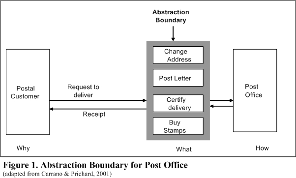
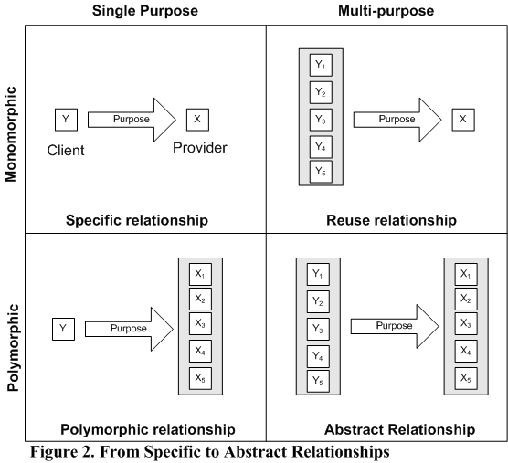

| |
Institutions as Abstraction Boundaries |
||||||
Institutions as Abstraction Boundaries
Bill Tulloh,
George Mason University
btulloh-at-gmail.com
Mark S. Miller
Virus Safe Computing Project
Hewlett Packard Labs
Johns Hopkins University
erights-at-gmail.com
To appear in Jack High (ed) Social Learning: Essays in Honor of Don Lavoie.
Abstract: A central claim of the modern Austrian school is that a competitive market order can solve the knowledge problem while a centrally planned economy cannot. While Austrians such as Hayek have focused on the essential role of abstract rules and the coordinating role of prices, they have largely neglected the familiar, day-to-day institutions of store fronts, standardized contracts, and specific markets towards which people orient their actions. These secondary institutions, as Lachmann calls them, are examples of what software developers call abstraction boundaries. Abstraction boundaries both categorize knowledge into productive divisions and coordinate plans through time. We apply the software concepts of abstraction and modularity to better understand how these institutions promote both coherence and change. We argue that the drawing and redrawing of abstraction boundaries is a neglected aspect of the market process.
* The authors would like to thank Darius Bacon, Howard Baetjer, Jack High, Ken Kahn, Thomas McQuade, Nick Szabo, and Lauren Williams for helpful comments.
Introduction
The exploration of the knowledge problem – the ability of an economic system to generate and sustain a complex structure of production based on an extensive division of knowledge – formed a central theme of Don Lavoie’s research. His critique of central planning and investigations into the nature of knowledge led him to emphasize the indispensable role of the market process in solving the knowledge problem.1 Only the market process can harness the diverse knowledge of millions of people into an evolving pattern of cooperative relationships that serves an ever increasing variety of individual purposes.
According to the critique of central planning developed by Mises, Hayek, Lavoie and others, central planners lack the knowledge necessary to successfully plan production and calculate economic tradeoffs. Central planners do not have access to the tacit and contextual knowledge that individuals use in planning their activities, nor do they have access to competitive price and profit signals that are required for calculating tradeoffs among the myriad uses of scarce means. The effective use of knowledge, Lavoie argues, requires a decentralized solution – a solution provided by the market process.
For the market process to make effective use of knowledge, it must solve two problems: 1) it must divide knowledge to capture gains from specialization, and 2) it must coordinate the separate plans of market participants to secure gains from cooperation. Gains from specialization arise when ‘people can use other people’s knowledge to their own advantage without themselves acquiring it.’ (Vaughn, 1999, p. 133) Specialization economizes on knowledge production by reusing proven solutions. Specialization increases knowledge production by encouraging the discovery of new solutions; knowledge, as Brian Loasby reminds us, ‘grows through division.’ (Loasby, 1999, p. 50)
Each increase in specialization ‘necessitates additional coordination somewhere in the social structure.’ (High, 1986, p. 117) Specialized activities must be combined with complementary activities, and individual plans based on time and place specific knowledge must be coordinated with those of others. (Hayek 1937, 1945) The market process must do more than just coordinate plans based on dispersed knowledge that exists at a point in time; it must also adapt these plans to new knowledge constantly being created in the pursuit of further gains from specialization and cooperation.
The market process solves the twin problems of the division and coordination of knowledge through abstraction. Abstraction modularizes knowledge. Abstractions, by selectively hiding information, enable market participants to make use of a complex network of specialized knowledge without needing to acquire the knowledge themselves. As one computer scientist (Turbak, 2002, p. 4) describes it:
Abstraction is ubiquitous in the modern world and we depend on it for functioning in our day-to-day lives. We are able to use a wide array of machines and devices (e.g. cars, telephones, stereos, computers) without having to understand the details of how they work. Supermarkets, department stores, and utilities are purveyors of abstractions; for the most part, we do not need or want to know how a loaf of bread is baked, how a piece of clothing is made, or how our electricity, water, and gas are produced.
To facilitate cooperation, abstractions must be made meaningful to others so that they can use them for their own purposes. Programmers call the process of carving up knowledge into meaningful units creating abstraction boundaries. An abstraction boundary captures a specialized solution to a type of problem and packages it for reuse. The abstraction boundary hides the details of how the solution is implemented from potential users, while providing them with the information they need to apply the solution to their particular problem. Programmers use abstraction to divide programs into modules that can be combined with other modules through well-defined interfaces (the boundaries) to create complex behavior.
Abstraction boundaries enhance cooperation by reducing the cost of using the solutions.2 Abstraction boundaries limit what clients need to know about solution providers, and what solution providers need to know about their clients. The boundary defines what the solution is, but not how it is provided, nor why it is used. Clients, by orienting their plans to the boundary, can ignore implementation details which are likely to change.3 Providers, meanwhile, are free to change how they provide the solution so long as they continue to provide the type of solution defined by the boundary. Abstraction boundaries enable both solution providers and their clients to coordinate and adapt their particular plans based on the abstract plans embodied in the boundary.
By borrowing concepts from software engineering, we are drawing on work, done during the late 1980s and early 1990s by Lavoie, the current authors and others. The Agorics Project explored the relationships between object-oriented concepts from software engineering and the market institutions of property and contract.4 As Lavoie remarked, ‘In particular, the concepts surrounding the idea of “modularity” have proven valuable in rethinking the nature of property rights and evolutionary change in market systems.’ (Lavoie, 1994, p. xi) The recognition that software developers faced an analogous knowledge problem to that of markets and that they had independently evolved solutions that resemble market solutions suggested that this would be a fruitful line of research to increase our understanding of both systems.
We argue that the commonality of solutions is no mere coincidence, but a consequence of underlying principles for organizing complex adaptive systems. The concepts of abstraction and modularity that underlie the object-oriented approach to organizing a complex software system also underlie the market process approach to organizing a complex structure of production.5
The Austrian vision of the market process can be enhanced by recognizing the role that abstraction boundaries play in dividing knowledge and coordinating plans. Hayek’s (1973, 1976) account of an abstract order based on abstract rules provides a framework for understanding abstraction boundaries, but fails to acknowledge their role. What Lachmann (1971) calls secondary institutions – the day-to-day institutions towards which people orient their actions – fills the gap, capturing what we mean by abstraction boundaries. Abstraction boundaries also shed light on how markets deal with the problem of institutional coherence and change. (Lachmann 1971, 1979, 1991) By facilitating orderly change, abstraction boundaries coordinate plans through time. Following Lavoie, we argue that abstraction boundaries emerge as part of the market process; they are best viewed as negotiated categories resulting from the dynamic process of exchange and dialogue.
Between abstract rules and concrete purposes
Friedrich Hayek, in particular, emphasizes the fundamental importance of abstraction. Abstractions, he explains, ‘are a means to cope with the complexity of the concrete which our mind is not capable of fully mastering.’ (1973, p. 29) What he calls ‘the primacy of the abstract’ (1978), is deeply woven into his vision of the market order, visible in many diverse strands of his thought. The primacy of the abstract stems from his work on the mind, begun while he was his twenties and later elaborated and presented in The Sensory Order. (1952b) His theory of the mind informs numerous aspects of his work including the limits to understanding complex phenomena, his concept of spontaneous order, and the importance of abstract rules of conduct. While Hayek paints a complex picture of the multi-faceted role of abstraction, he does not seem to recognize the role of abstraction boundaries. Abstraction boundaries, we argue, emerge as a natural complement to his discussion of abstract orders based on abstract rules.
Hayek presents the mind as a system of classification. We do not first perceive the world in its detailed particulars and then build up more abstract representations. To the contrary, our ability to perceive particulars depends on pre-existing abstractions which we use to classify our various sense perceptions. Perception must be viewed as an act of classification; we perceive only certain abstract properties of objects, not concrete details. As Heinrich Klüver elaborates, ‘What we perceive are never unique properties of individual objects, but always only properties which the objects have in common with other objects. Perception is thus always an interpretation, the placing of something into one of several classes of objects.’ (Hayek, 1952b, p. xviii)
As Hayek makes clear, the classifying of objects does not proceed based on a simple one-to-one mapping of observed objects into mental categories. It is rather the ‘product of superimposition of many “classifications” of the events perceived according to their significance in many respects.’ (1978b, p. 36) Each classification triggers a response in terms of a kind of action; we respond to a certain class of events with a disposition to a certain kind of action. It is only through the superimposition of many classifications and dispositions that a particular action is specified: ‘both the specification of a particular experienced event and the specification of a particular response to it are the result of a superimposition of many such dispositions.’ (Hayek, 1978b, p. 40)
Specification by superimposition, Hayek claims, is the ‘best description of the mechanism for the operation of … the primacy of the abstract, because each of its causal determinants decides only one of the attributes of the resulting action.’ (1978b, p. 48) The specification of action through the superimposition of multiple dispositions enables the individual to make use of knowledge of typical aspects of a situation while adapting the response to the unique aspects. The various dispositions serve as adaptations to the typical features of the environment. By superimposing many dispositions, we are able to generate unique responses to novel situations.
Hayek, especially in his later work, presents a vision of the market order that is remarkably similar to his account of the sensory order. Both mind and market are examples of what Butos and McQuade (1999) describe as knowledge-generating orders – orders where the knowledge generated consists of classifications meaningful in the context of that order. They argue that ‘it is strictly incorrect to say that the market gathers up “divided” individual knowledge and makes this information available to many others …. Instead, the market takes, as input, knowledge in the individual sense … and classifies this, producing a totally different kind of knowledge.’ (1999, p. 29)
Classifications provide knowledge that others can use. They abstract from detailed particular circumstances and purposes to provide reusable knowledge of general circumstances that can be applied to multiple purposes. They enable individuals to economize on knowledge by substituting abstract knowledge of the class for specific knowledge of the instances. Hayek’s work suggests that these classifications exist at multiple layers and adjust continuously to changing circumstances and accumulated experience. This multi-layered view of the knowledge-generating properties of the market order stands in contrast however, to the stark distinction Hayek seems to draw between the roles that abstract rules and concrete purposes play in creating that order.
Hayek argues that the emergence of the extended order of cooperation (1989) rests on the gradual change from a society organized around the common pursuit of a limited number of concrete purposes to a society organized around adherence to a common set of abstract rules of conduct that coordinate a countless number of diverse purposes.6 Rules of conduct are abstract in the sense that they abstract from the concrete purposes and circumstances. They abstract from particular circumstances of time and place to capture certain general circumstances that have proven useful for the pursuit of many diverse plans. Abstract rules are purpose independent: they serve no particular purpose, but improve the chances for success of a large number of different purposes.
Actions based on abstract rules generate an abstract order. Abstract orders are formed spontaneously, not by deliberate arrangement. They are based on abstract relations serving multiple purposes, not concrete relations serving a single purpose. By serving multiple purposes, the complexity of abstract orders is ‘not limited to what a human mind can master.’ (1973, p. 38) The abstract order exists independently of any particular member; the order persists through the abstract relations that define it. Hayek (1973, p. 39) tells us that abstract orders
… consist of a system of abstract relations between elements which are also defined only by abstract properties…. The significance of the abstract character of such orders rests on the fact that they may persist while all the particular elements they comprise, and even the number of such elements, change. All that is necessary to preserve such an abstract order is that a certain structure of relationships be maintained, or that elements of a certain kind (but variable in number) continue to be related in a certain manner.
Abstract rules enhance the ability of individuals to predict the actions of others. They increase predictability by delimiting protected domains of actions. Domains of action provide a place where individuals can plan based on their particular knowledge. They provide a space where individuals can make use of their resources free from interference by others. Abstract rules must do more, however, than just prevent plan interference by delimiting protected domains of actions. They must provide us with a way to connect these separate domains into cooperative relationships. Hayek (1973, p. 99) tells us that:
What is required if the separate actions of the individuals are to result in an overall order is that they not only do not unnecessarily interfere with one another, but also that in those respects in which the success of the action of the individuals depends on some matching action by others, there will be at least a good chance that this correspondence will actually occur. But all rules can achieve in this respect is to make it easier for people … to form that match; abstract rules cannot actually secure that this will always happen.
While Hayek highlights the importance of matching complementary actions, he provides us with little guidance on how the matching process takes place. His distinction between purpose-independent rules and purposeful action suggests that coordination occurs at the level of concrete purposes and plans. The attempt to match concrete plans directly with other concrete plans, however, leads to plan failure as circumstances change. In the face of change, people must constantly adapt their plans in unforeseeable ways. Concrete plans are highly brittle in the face of such changes. All plans, however, need not share the same level of concreteness; plans may differ in their degree of specificity. Abstract plans, that encompass a range of specific purposes, are likely to be more robust in the face of changing circumstances. By capturing the abstract aspects of many individual plans and embodying them in market institutions, market participants can enhance their ability to coordinate their plans through time. The matching process occurs not through direct matching of concrete plans but through matching of abstract plans embodied in institutions.
The problem with Hayek’s treatment of abstract rules, one might say, is that it is too abstract. He does not explain how these abstract rules are specified into concrete actions that coordinate plans. While he highlights the importance of judge-made law in delimiting domains of action, he fails to provide an account of how market participants through their everyday actions convert abstract rules into institutions that facilitate the matching of complementary activities. The boundaries defined by abstract rules must do more than separate activities where they conflict. They must also combine activities where they complement. Hayek’s account leaves a large gap in how this occurs; it leaves a gap between abstract rules and concrete purposes. What is missing is the role that market institutions play in filling the gap by classifying useful knowledge and facilitating the matching process required for its reuse.7
Secondary institutions as abstraction boundaries
Ludwig Lachmann, in his 1971 book, The Legacy of Max Weber, discusses the role that market institutions play in coordinating plans. Like Hayek, he highlights the fundamental role played by property, contract, and the rule of law in shaping the market order. Unlike Hayek, he moves beyond abstract rules to discuss the specific institutions of the market order, what he calls secondary institutions. Secondary institutions ‘gradually evolve as a result of market processes and other forms of spontaneous individual action.’ (1971, p. 81) They are the familiar institutions of day-to-day life: the restaurants, the banks, the post offices, the stock exchanges, and so on.8
These concrete institutions embody abstract plans. They fill the gap between purpose-independent abstract rules and specific concrete purposes. A plan, Lachmann tell us, ‘is but a generalization of purpose.’ (1971, p. 33) It abstracts the multiple purposes, means, and obstacles pursued by an individual into a comprehensive framework for action. Similarly, a secondary institution is but a generalization of plan, it abstracts from the multiple plans of various individuals to provide a common point of orientation. As Lachmann explains, ‘If the plan is a mental scheme in which the conditions of action are coordinated, we may regard institutions as it were, as orientation schemes of the second order, to which planners orient their plans as actors orient their actions to a plan.’ (1971, p. 50)
Secondary institutions serve as means of orientation that help coordinate action in society. By orienting our plans towards these institutions, we make use of a vast amount of knowledge without the need to acquire it in detail. Lachmann (1971, p. 50) gives the example of a post office.
Whether we post a letter, wait for a train, or draw a cheque, our action is in each case orientated towards a complex network of human action of which we know enough to make it serve our ends, though we may know next to nothing about the internal working order of these institutions. We know of course that such an internal working-order exists, but in our everyday life take no interest whatever in its details. We know very well that the Post Office works according to a general plan, but such knowledge as we have about it is usually quite irrelevant to the achievement of our purpose in posting a letter. Only a few aspects of this general plan, perhaps the times of collection and delivery of mail, need be of concern to us.
By drawing our attention to the aspects of an institution with which one interacts, Lachmann is presenting what software designers refer to as an abstraction boundary – the interface between actors. The abstraction boundary captures the abstract plan common to the various actors. The actors coordinate their actions to the boundary, not to the detailed plans of the other actors. As Lachmann notes, the postal customers need concern themselves with only a few aspects of the post office’s plan. These few aspects form the abstraction boundary. The post office communicates these aspects to the postal customers, who rely on these details in forming their own particular plans.
The abstraction boundary defines a division of knowledge. Instead of each of us having to deliver our own letters and packages, we can rely on the specialized services of a post office. We no longer deliver our own mail because some entrepreneur, forgotten to history, recognized a profitable division of labor and created an abstraction boundary.9 The entrepreneur 1) recognized an abstraction – the commonalities in the separate plans of people delivering their own letters, 2) drew a boundary around the abstraction defining the service of mail delivery, and 3) encapsulated the implementation of these services behind the abstraction boundary while convincing others that it would serve their purposes to use this new service.10 The post office, by reusing its specialized knowledge across many instances of mail delivery, is able to capture economies of specialization. Postal customers benefit when the cost of their using a post office to deliver a letter is less than the cost of their delivering it themselves.
Institutions as abstraction boundaries are not the same as organizations. An abstraction boundary is the interface that lies between actors, such as that between postal customers and the post office. The post office as an organization differs from post office as an abstraction boundary. The post office as an abstraction boundary represents a particular kind of provider-client relationship. The post office as an organization implements the services defined by the abstraction boundary. The boundary defines how the post office as an organization relates to other elements of the more comprehensive order of which it is part. A concrete post office instantiates the abstract interface and implements the delivery services. It is part of a larger postal system that encompasses additional entities such as delivery vehicles, warehouses, sorting machines, and tracking facilities. From the point of view of the postal customer, however, the implementation detail is hidden behind the abstraction boundary of the post office.

The abstraction boundary of the post office separates the relationship into distinct actors; it forms the interface between a postal customer requesting delivery of a letter and a post office that fulfills that request. The boundary describes the vocabulary used in the dialogue between a post office and its customers: post my letter, change my address, certify delivery, and so on.11 The abstraction boundary also defines what it means for a post office to be an instance of the type post office. Objects of the same type share the same interface. The abstraction boundary embodies and reifies what it means to be an object of a particular type. It defines what services can be expected from a post office, while distinguishing this type of service from other types of services.12
Abstract plans serving abstract purposes
The abstraction boundary enables what software designers refer to as separation of concerns; it separates:
-
why a customer wants to mail a letter (the concern of the postal customer) from,
-
what it means to mail a letter (the mutual concern of the parties) from,
-
how a letter gets delivered (the concern of the postal system).
The post office does not need to know that Alice wants to invite Bob to a birthday party, or that Carol wants to send her monthly payment to the power company. The boundary abstracts from the details of the customers’ plans to focus on the common attributes of transporting a sealed envelope to a specified address. Similarly, the postal customer does not need to know how the commitment to deliver a letter will be implemented. They do not need to know that the mail will be delivered using a tractor-trailer truck if the address is within 500 miles, or delivered by airplane if the address is more than 500 miles away. Both parties, however, need to know the ‘what,’ that is, the specific steps needed to post the letter. This is the boundary.
By abstracting on the one side from the specific purpose of a request, and on the other side from the specific way the requested action is implemented, the abstraction boundary enables a large degree of flexibility on both sides. The post office can accommodate a large range of specific reasons for mailing a letter, including ones not yet known. At the same time, the post office is free to try to discover better ways of delivering letters. The entities obtain this flexibility because of the stability of the boundary. The abstraction boundary by capturing the mutual concerns of both parties while abstracting from their particular purposes is able to remain relatively stable in the face of change. The stability and familiarity of the category of a post office makes it easy, for example, for someone visiting a new town to locate a new instance of the type post office and mail a post card home even without any prior knowledge of that particular post office.
The creation of an abstraction boundary converts a specific relationship into an abstract relationship. A specific relationship directly links a particular solution to a particular purpose. An abstract relationship links a type of solution to a type of purpose through an abstraction boundary. A relationship is abstract when the common services defined in the boundary can be used for multiple purposes, and provided by multiple providers. The abstraction boundary limits what the parties need to know about each other; it allows the provider to treat as common a diverse set of clients, and the client to treat as substitutes a diverse set of providers.

An abstract relationship combines both reusability and polymorphism. Reusability occurs when a single solution can be reused for multiple purposes. Polymorphism occurs when multiple providers can serve a single purpose. Reusability generalizes across the purposes of the various clients (the particular whys) to focus on the aspects they share in common. Polymorphism generalizes across the implementations of the various providers (the particular hows) to focus on the common services that they provide. Polymorphism enables clients to substitute one provider for another so long as they provide the same type of service; it shields the clients not only from how the services are provided, but also from who provides the service.
Lachmann’s post office example highlights the advantages of moving from specific to abstract relationships. Organizing around specific relationships is neither economical nor adaptable. We would not expect to see mail delivery organized around specific relationships on a large scale: a post office specializing in delivering Alice’s birthday cards to her grandmother, or a post office specializing in delivering Bob’s payment to the gas company. By abstracting from the various purposes, a provider can reuse the common mail delivery solution for multiple purposes.
By abstracting from the particular implementations, clients can substitute different providers of those services, based on their more exact requirements. Wirfs-Brock and McKean (2002, p. 3) use the example of mail delivery to make this point to programmers.
Objects that play the same role can be interchanged. For example, there are several providers that can deliver letters and packages: DHL, FedEx, UPS, Post, Airborne. They all have the same purpose, if not the same way of carrying out their business. You choose from among them according to the requirements that you have for delivery. Is it one-day, book rate, valuable, heavy, flammable? You pick the mail carrier that meets your requirements.
Abstraction boundaries play an important cognitive role by classifying various activities into types of activities, and by making these classifications accessible to others. The boundary takes an abstraction and makes it concrete. It reifies the abstraction by articulating it in the design of the interface – in its contracts, in its store designs, in its customer-facing procedures, and in the design of its products. The abstraction boundary is the invention of the possibility that two entities can interact in a particular way; without the boundary the abstraction is too intangible to be useful.
In the market context, abstraction boundaries often take the form of transaction boundaries. The abstraction boundary increases the potential for gains from trade by reducing the costs for people seeking a particular kind of trade. An abstraction boundary increases the chances that a particular kind of trade will happen by limiting the types of transactions that can occur through the boundary. There are all sorts of potential gains from trade that may exist between a particular postal customer and a particular postal worker. For example, the postal customer may be in the market for a used car, and the postal worker may be looking to sell his old one. However, this kind of transaction is not permitted through the boundary of the post office. The post office enables the realization of some of the potential gains from trade between postal customers and the postal workers, while ignoring a vast number of other potential gains from trade. By doing so, it increases the chances that many more postal customers and post offices will realize the gains from posting a letter. The abstraction boundary serves as a meeting place for people seeking a particular kind of gain from trade; it provides a familiar place to which people seeking a type of transaction can orient their plans.13
The concept of abstraction boundary can also help us answer Lachmann’s question of ‘How is the need for coherence and permanence reconciled with that for flexibility in the real world?’ (1971, p.90) Secondary institutions provide stability with flexibility. Lachmann uses the metaphor of a hinge. He writes, ‘one is tempted to think of the institutional order as an array of hinges: the institutions within each hinge can move a good deal, if within limits, but the hinges themselves cannot.’ (1979, p. 253) Abstraction boundaries play the role of the hinges, enabling flexibility on both sides of the boundary. Relatively stable abstraction boundaries permit a wide range of changes in purposes and implementations through the separation of concerns. Changes on either side of the boundary will not upset plans so long as the interface does not change.
Abstraction boundaries can coordinate existing plans while supporting new requirements through what programmers call subtyping. A subtype extends the scope of an existing abstraction boundary by adding additional behaviors. Since a subtype must fulfill all of the obligations defined by its supertype, it can be substituted in place of its supertype without upsetting the expectations of existing clients for that type. This enables what Lachmann calls the widening of institutions.14 We can adapt to change ‘not by the creation of a new institution, nor by replacing an old by a new, but by “widening” an existing institution in such a way that it can serve new interests without upsetting the plans which have thus far made use of it.’ (1971, p. 91)
Programming as plan coordination
As Lachmann’s post office example suggests, programming can be usefully analyzed in terms of the Hayekian notion of plan coordination. Programs perform actions: plans are specified by the programmer at design-time; plans are executed by the computer at run-time.15 In order to cope with the intellectual complexity of large programs, programmers divide a program into separate modules, each embodying its own plan of action. The challenge facing programmers can therefore be seen as one of plan coordination; programmers must coordinate the plans of the various modules to ensure the harmonious working of the overall system.
Most software bugs result from plan interference. Breakdown occurs because of coordination failure between parts of the program. Actions taken by one module destroy the assumptions used by another module in planning its actions. Hidden dependencies between modules render assumptions unstable and plans mutually incompatible. For example with procedural programming, the plans of two subroutines may conflict because they unknowingly share the same data. Subroutine A performs a calculation and stores the resulting data for future use. Meanwhile, subroutine B performs its operation overwriting A’s data. Subroutine A retrieves the data for further processing, not realizing that it has been modified by B – leading to unexpected results and potential system failure.
The history of software development can be seen as an ongoing development of techniques – embodied in programming languages and development methods – to cope with the challenges of plan coordination through time.16 Centrally planned approaches to software development broke down in the face of increasing complexity, forcing programmers to introduce a division of labor into their programs. Attempts to divide labor according to the principles of procedural programming enabled programmers to build more complex programs, but were subject to massive plan failure when program requirements changed. Procedural programming, which divided the tasks into subroutines while keeping program data in common, could not easily adapt to changing circumstances. Object-oriented programming improved on procedural programming by dividing both the tasks and the data; it combined the data with the procedures that act on it. By eliminating the dependencies caused by shared data, it provided greater flexibility in adapting to change.
Object-oriented programming divides a program into separate objects that are each instances of a particular type. An object combines a set of related behaviors (its methods) with its private data (its state). The object’s type is defined by its set of methods. An object’s state – its particular circumstances of time and place – is said to be encapsulated because only its methods have the ability to access or modify that state. Other objects cannot directly access the internal state of another object; they must send a request to the object asking it to perform a particular action.17
The move from procedural programming to object-oriented programming can be seen as a move from concrete plans to abstract plans. Objects do not coordinate their actions with the specific plans of other objects; they coordinate their actions to the abstract aspects of those plans. An object’s interface abstracts from a specific plan to a kind of plan. Object-oriented programming, or more generally the move to encapsulation, message passing, and polymorphism, is essentially trying to move from plan coordination to pattern coordination, (O’Driscoll and Rizzo, 1985) where what is meant by patterns is abstracted plans. It does this by re-discovering the virtues of property rights and contract.18
Hayek’s explanation of the primary virtue of property rights for organizing large scale economic activity parallels the rationale for encapsulation in object-oriented systems: to provide a domain (an object’s encapsulation boundary) in which an agent (the object) can execute plans (the object’s methods) that use resources (an object’s private state), where the proper functioning of these plans depends on these resources not being used simultaneously by conflicting plans. By dividing up the resources of society (the state of a computational system) into separately owned chunks (private object states), we enable a massive number of plans to make use of a massive number of resources without needing to resolve a massive number of conflicting assumptions.
Objects must collaborate to fulfill their responsibilities. They collaborate by sending messages requesting other objects to perform an action. Message passing distributes the responsibility for performing the work of an application across many objects. Each object is responsible for performing services or knowing information useful to others. (Wirfs-Brock and McKean, 2002) The object receiving the message is responsible for determining how to respond to the message. The object’s interface defines the set of messages to which it will respond. The interface represents a contract between the object making requests and the object providing the requested service.19 The contract provides ‘a list of the requests that can be made of the server by the client. Both must fulfill the contract: the client by making only those requests it specifies, and the server by responding only to those requests.’ (Wirfs-Brock and Wilkerson 1989, p. 72)
Object-oriented programming reduces plan interference by encapsulating the computational state of a system into separate objects. It increases plan coordination by combining objects through message passing. Message passing increases the adaptability of the system by basing the interaction between specific objects on the abstraction boundary – the abstract relationship between types of objects. Collaboration between concrete plans occurs through the coordination of abstract plans.
Orient plans to an interface, not an implementation
The run-time composition of objects by message passing stands in contrast to the design-time organization of abstraction boundaries into a type hierarchy. The type hierarchy defines a static relationship between types, organizing them from more general supertypes to more specific subtypes. The run-time interaction of objects consists of the dynamically formed relationships among specific objects.20 Programmers can enhance the ability of the program to adapt to unforeseen change by ‘programming to an interface and not an implementation.’ (Gamma et al, 1995, p. 18) By programming to an interface, the programmer orients the behavior of an object to the abstract plans of other objects, not to the concrete plans of specific objects. Objects with different concrete plans can be substituted for one another at run-time without requiring the programmer to rewrite and recompile the program. Market participants, similarly, gain adaptability by orienting their plans to an interface and not an implementation. Programmers and market participants benefit from orienting their plans to stable boundaries, not frequently changing concrete plans.
Programmers create the abstraction boundaries of the program at design-time. The major creative act of programming is to look at some large set of computational activity and to discover boundaries in it – to find distinctions that enable programmers to see commonalities or patterns. The distinction reveals commonalities – among providers on one side and clients on the other – that were previously unnoticed. Once the commonality or pattern is recognized, programmers attempt to find a way to package it, so that they can embody the usefulness of that part of the computational space into a module that other programmers can use.
The perspective of programming as plan coordination also sheds light on the role of the entrepreneur. It suggests that the role of the entrepreneur is to create and adapt abstraction boundaries. Programming to abstraction boundaries adds flexibility at run-time. The boundaries, however, remained fixed; interaction occurs between objects with fixed boundaries. The abstract plans are fixed by the programmer in advance; they do not change during run-time.
Several software designers have proposed moving to market-oriented programming as a way to increase run-time flexibility.21 Market-oriented programming introduces price signals into a program. Price signals allow objects to dynamically trade-off the scarce computational resources used in carrying out their plans. Objects are alert to opportunities presented by changes in price, and thus able to dynamically shift from one plan to another. All of the adaptation of plans, however, must still take place within the divisions created by the programmer; the system still does not have creativity in the sense of being able to create new divisions. New abstractions are created outside of the system. It is the programmers, the human beings, who create new abstraction boundaries; the evenly rotating carrying out of plans is something we get the computer to do.
Our distinction bears a resemblance to the one that Buchanan and Vanberg (2002) make between creative and reactive choice. Creative choice creates alternatives from which other individuals choose; reactive choice is choice among the alternatives presented. Abstraction boundaries define what alternatives are available. New alternatives are created by changing the abstraction boundaries. Objects at run-time can react to the alternatives presented to them by the existing abstraction boundaries, but they normally cannot change the boundaries to create new alternatives.22
Lavoie and the re-categorization of the market order
By recognizing the role of the software designer in creating abstraction boundaries, we highlight an important difference between abstraction boundaries in software and those in markets. In markets, there is no programmer standing outside the economy ready to change the boundaries; there is no exogenous source of change. Changes to abstraction boundaries occur as part of the ongoing market process. Market participants are engaged in the process of drawing and redrawing abstraction boundaries. Abstraction boundaries emerge as negotiated categories that help orient plans.
The software design process is highly collaborative; software designers engage in a process of dialogue – with each other and with prospective users of the system – in order to discover abstraction boundaries.23 The importance of dialogue in creating abstraction boundaries should not be surprising. As Hayek tells us, ‘We learn to classify through language, with which we not merely label known kinds of objects but specify what we are to regard as objects or events of the same or different kinds.’ (1989, p. 15)
Don Lavoie (1990b, 2003), in particular, has emphasized the creative role of dialogue in markets. He draws on the work of Gadamer (1989) to emphasize the emergence of new meaning from the spontaneous ordering process of dialogue – a process writ large in the spontaneous ordering process of the market. Lavoie argues that , ‘Markets are an extension of language, and they work through concrete acts of articulation, whether oral or written or electronic. You could say that markets simply add whole new kinds of texts, prices, profits, contracts, advertising, etc., to the conversation.’ (2003, p. 12) He goes on to urge that, ‘Among the institutional forms that Austrian economists ought to pay attention to are the articulation processes and the resulting texts through which human actors communicate their meanings.’ (2003, p. 16)
We suggest that we ought to pay attention to these institutional forms because they represent the process by which abstraction boundaries evolve and the means by which they are formed. Market articulations are attempts to create shared categories of meaning that enable us to coordinate our actions. Abstraction boundaries, in order to serve as orientation points, must be articulated; they must be made concrete.24 Articulation in dialogue – by words and by texts – creates a space where shared meanings can form. Articulation in markets – by contracts, by product designs, and by other marketing efforts – creates a space where shared categories can form. These shared categories serve as points of orientation that help coordinate plans. As Peter Lewin writes, ‘Expectations and plans are, for the most part, fulfilled because of the existence in the social world of shared categories and standards that facilitate the synchronization and coordination of activities.’ (1999, p. 34)
Lewin illustrates this point by examining the emergence of new categories of products. These categories emerge from attempts to articulate the purpose of new products – how they are similar, how they are different, and how they relate to other products. He (1999, p. 39) writes:
We cope with the complexity in the world by converging on institutions. Thus once the arrival of new products, made possible by the development of a new technology, has been digested, new categories of classifications tend to be developed, into which these products are grouped. These categories emerge spontaneously out of individual attempts to communicate the attributes of the new products. A good example is the products of the computer industry. A whole range of products exist, whose workings remain a mystery to the vast majority of people, but whose purposes needed to be explained. Laptops evolved into notebooks, micro computers into desktops…. All these shorthands provide the increasingly informed public with a way to tailor their expectations when choosing between products.
Shared categories, the abstraction boundaries of the market, emerge from the interaction of entrepreneurs and their potential customers. They emerge from the attempt by entrepreneurs to define what services their products can provide; and the attempt by their customers to express what services they desire. Entrepreneurs orient their actions to existing categories: they mimic current categories by imitation; they modify them by differentiation; and they try to create new ones through innovation. Successful categories, those that persist, reflect not just the action of entrepreneurs, but also the responses of potential customers. Potential customers express their requirements through various means, through negotiation, through novel uses of products, through responses to market research, and ultimately through their purchase or failure to purchase the entrepreneur’s offering. The resulting categories become embodied in the design of products, in the design of secondary institutions, and in the grouping of product and institutional types into more general categories that help orient people’s actions. Shared categories emerge from the market process of dialogue and exchange.25
Lavoie argues that ‘entrepreneurship should be conceptualized as a social process of mutual orientation.’ (2003, p. 6) He argues that ‘Our ability to coordinate with one another may depend on our capabilities for mutual orientation, to see not the things themselves, but to see how one another are seeing things.’ (2003, p. 2) The focus on mutual orientation suggests that we shift our attention to how market participants articulate and share meanings, and how they negotiate shared categories that orient their actions.
In recasting entrepreneurship as mutual orientation, Lavoie generalizes the account of the entrepreneur provided by Lachmann.26 Lachmann (1956) presents the function of the entrepreneur as one of combining heterogeneous capital goods into a specific production plan which must fit into a complex capital structure. Lachmann emphasizes both the need to specify a concrete use, and the need to fit the particular use into a complex web of complementary capital goods.27 As we have seen, abstraction boundaries are the key to flexibly combining complementary activities. The process of ‘specifying’ and ‘fitting’ requires both the discovery of an abstraction and the creation of a boundary that allows it to connect to complementary activities. Entrepreneurs must look beyond existing categories to specify new solutions, yet at the same time fit the new solution into a pattern of complementary activities. The entrepreneur oriented to the existing categories reads a situation anew, identifies a problem or opportunity, specifies a solution and fits the solution into a complementary web of activity so that the plans of others can be easily reoriented to the new categories.
Self-reorganization of the market order
Entrepreneurs and marketers look beyond existing boundaries to identify commonalities currently hidden behind those boundaries. By creating new distinctions (new abstractions), entrepreneurs are identifying both what should be treated as similar and what should be treated as different. They re-categorize existing shared categories in order to capture overlooked commonalities, or to separate overlooked differences. Entrepreneurs create value by creating new distinctions: where two similar things are being treated as different, there are gains to be had from removing the differences; where two different things are being treated as similar; there are gains to be had from removing the similarities.
Israel Kirzner’s (1992) theory of entrepreneurship as arbitrage provides an example of one way that entrepreneurs can capture gains from removing differences. The entrepreneur notices that two similar goods are being treated as if they were different; two instances of the same type of good are selling for two different prices. The alert entrepreneur, by buying low and selling high, can profit from removing this difference. The entrepreneur helps re-categorize the undervalued good by bringing it to the attention of those who value it more.
Arbitrage, however, is not the only source of potential gains from noticing commonalities; recognizing commonalities can also lead to economies of scale and scope. Langlois (1999) argues that economies of scale and scope result primarily from the reuse of knowledge.28 Economies arise from abstracting out the common aspects of a solution and reusing them across multiple instances. He gives the example of multiplex cinemas: cinema owners gain economies of scale by reusing the services of ticket windows, lobbies, restrooms, snack bars, and management across multiple individual theaters. The common features of stand-alone cinemas were abstracted out, and packaged for reuse by the theatres in the multiplex.29
Gains can also be had by recognizing differences where others see similarities. Fred Smith (2002), for example, when starting Federal Express (now FedEx) recognized that shippers and recipients of small packages differed in the value they placed on the timeliness and reliability of delivery. He recognized that customers who value speed and reliability (for example those who need spare parts to keep expensive capital equipment running) would be willing to pay for guaranteed overnight delivery. Standard approaches to package delivery abstracted from these differences treating them all the same. By looking past the existing boundary, Smith was able to discern differences in why people wanted package delivery services. By identifying a new commonality among these differences (desire for guaranteed overnight deliver), he was able to create a new abstraction boundary defining this new type of service.30
Just recognizing the new abstraction, however, was not enough. Federal Express had to create new capital combinations, and fit them into an evolving capital structure. Airplanes were purchased and flight routes were organized into a then novel hub-and-spoke configuration. Air delivery was combined with delivery trucks to provide door-to-door service. New interfaces that defined this new type of service were created and marketed to both shippers and receivers of packages. The creation of the new abstraction boundary of overnight delivery required a reconfiguration of the capital structure involved in providing that service. The change in abstraction boundary generated a new structure of cooperating objects involved in providing guaranteed overnight delivery. By hiding these changes from the customers, the abstraction boundary made it easy for customers to adapt their plans.
As the FedEx example suggests, abstractions boundaries, by virtue of being abstract, provide a source for endogenous change. Abstractions, by emphasizing commonalities and suppressing differences, create opportunities for changing the boundaries. When the differences being hidden are unimportant, there is no incentive to change the boundary; when the differences being hidden start to make a difference, there is an incentive for the boundary to change. An abstraction necessarily hides the diversity of the various instances of the particular type. As long as those differences can be ignored for the purpose at hand, the abstraction boundary will be dynamically maintained by the system. When certain types of purposes and characteristics being hidden behind the abstraction become identifiably important, the abstraction boundaries will need to adapt to accommodate them.
The pervasiveness of the creation of new abstraction boundaries is illustrated by the role of marketing: marketers look across existing boundaries to better understand the ‘whys’ of their customers and potential customers. It is marketing's job to identify commonalities that may be hidden behind existing boundaries, and to identify new ways of servicing these commonalities. Marketing theorist, Wroe Alderson (1957), argues that marketing involves trying to match segments of heterogeneous supply to segments of heterogeneous demand. Marketers try to create offerings that provide value to a particular market segment. The market segment identifies a group that shares certain requirements in common despite their underlying diversity. Marketers design new products and services that serve these common needs, while at the same time trying to identify opportunities for further segmentation and differentiation.
Marketers, however, must go beyond the creation of offerings matched to the needs of particular market segments. They must also invest in creating secondary institutions that reduce the costs of transactions. Secondary institutions reduce the transaction costs associated with a type of transaction. Streit and Wegner (1992), also drawing on Lachmann, calls these ‘the sunk costs of transactions.’ They emphasize that the costs incurred to create an interface for a particular type of transaction are sunk costs from the perspective of a particular transaction occurring through the interface. They write, ‘The costs of making economic agents familiar with institutions become the sunk costs of transactions as soon as the corresponding knowledge is used repeatedly. What remains as a source of current transaction costs is the task of adapting or supplementing the institutional framework to make it fit individual transactions.’ (1992, p. 138)
From this perspective, the essential role of marketing is making markets – both creating a type of product or service, and creating secondary institutions to facilitate transactions of that type. Market institutions provide the customers ‘with readily-usable knowledge about how to make particular classes of transactions.’ (Loasby, 2000, p. 306) They are attempts to lower the information costs (Dahlman, 1979; Streit and Wegner, 1992) associated with a type of transaction. The particular shape of market abstraction boundaries will be influenced by the nature of those information costs– the cost of discovering whom to transact with, of informing others of exchange opportunities, of comparing options, of negotiating terms of trade, and of policing and monitoring compliance. Streit and Wegner give the example of negotiation costs: ‘quite a number of internal [secondary] institutions have evolved precisely to reduce this highly uncertain cost component, e.g. standardized contracts, and general conditions of sale.’ (1992, p. 137) Marketing efforts are investments in creating secondary institutions that generate informational externalities designed to lower the current costs of transactions. Secondary institutions by reducing these costs for a class of transactions remove the need for individuals to incur these costs for each specific transaction.
Alderson (1957) makes a similar point with his distinction between fully negotiated transactions and routine transactions. Fully negotiated transactions are unique or non-recurring transactions, which involve bilateral negotiations between the parties. Routine transactions are recurring transactions of a particular type: ‘transaction routines apply to classes of transactions that are judged to be essentially similar in their purposes and in the means of carrying them out.’ (Alderson, 1957, p. 297) With fully negotiated transactions all transaction costs are current; with routine transactions many of the transaction costs are sunk. Investments in secondary institutions reduce the costs of routine transactions; previous marketing activities and institutions replace the need to negotiate every feature of each transaction
Abstraction boundaries bring the benefits of separation of concerns, but they also provide an incentive for providers to look across the boundary for unmet needs, and an incentive for customers to express needs that are not being met. The potential for gains from reconfiguring the boundaries always exists. The abstraction boundaries are necessary to coordinate actions and to match segments of supply to segments of demand. Yet the essential diversity being hidden behind the abstraction provides an incentive for the discovery of new commonalities, and the creation of new abstraction boundaries to service them. The particular form of market abstraction boundaries will be shaped by the nature of the solution as well as the transaction costs associated with that type of solution. By ignoring the role of entrepreneurs and marketers in creating new products and new secondary institutions, economists do themselves a disservice. They miss an important source of endogenous changes to abstractions and their boundaries.
Conclusion
We are embedded in a world of abstraction boundaries; their very familiarity renders them largely invisible. We shop at instances of the type grocery store, we mail letters at instances of the type post office, and we live in instances of the type house purchased through instances of standardized mortgage contracts which are in turn bundled and sold on instances of the type secondary mortgage market. While we always interact with concrete instances, it is the abstract boundary that enables us to coordinate our plans and adapt to changing circumstances.
Abstraction boundaries represent abstract plans that fill the gap between abstract rules and concrete purposes. The abstraction boundary enforces a separation of concerns: it separates particular implementations of a solution from particular uses of the solutions. Abstraction boundaries convert specific relationships into abstract relationships: they enable the reuse of solutions by multiple clients, and the provision of solutions by multiple providers. By orienting their actions to the abstract plan defined in the boundary, the parties on both sides of the boundaries can more easily coordinate and adapt their particular plans. Abstraction boundaries enhance coordination by making it easier to separate plans where they conflict, and combine them where they complement. By abstracting from the particulars on both sides, boundaries provide a point of stability in the face of change. This abstractness however also provides an incentive for people to look beyond existing boundaries and create new ones that may better serve needs hidden by the boundaries.
Secondary institutions, understood as abstraction boundaries, play an important but overlooked role in the market process. They are the chief means by which the market classifies knowledge into reusable solutions, and by which the market reduces the costs of reusing the solutions. They enable market participants to make use of a wide range of knowledge without the need to acquire it themselves. As such, they are indispensable for understanding how the market process solves the knowledge problem. Abstraction boundaries are the negotiated categories that emerge from what Lavoie calls the dialogue of the market. From the boundaries of the firm (Langlois 2002) to the emergence of new markets (Loasby 2000), new capital goods (Baetjer 1998), new products (McNulty 1984) and new product categories (Lewin 1999), the definition and redefinition of abstraction boundaries permeates the market process.
References
Alderson, Wroe (1957), Marketing Behavior and Executive Action, Homewood IL: Richard D. Irwin.
Baetjer, Howard (1998), Software as Capital: An Economic Perspective on Software Engineering, Los Alamitos, CA: IEEE Computer Society.
Baldwin Carliss Y. and Clark, Kim B. (1997), ‘Managing in an age of modularity’, Harvard Business Review, September/October, pp. 84-93.
Baum, Eric B. (1999), ‘Toward a Model of Intelligence as an Economy of Agents’, Machine Learning, 35 (2), pp. 155-185.
Buchanan, James M. and Viktor J. Vanberg (2002), ‘Constitutional Implications of Radical Subjectivism’, Review of Austrian Economics, 15 (2/3), pp. 121-129.
Butos, William N. and Thomas J. McQuade, (2002), ‘Mind, Market, and Institutions: the Knowledge Problem in Hayek’s Thought’, in Jack Birner, Pierre Garrouste and Thierry Aimar, F. A. Hayek as a Political Economist, New York, US and London, UK: Routledge, pp. 113-133.
Carrano, Frank M. and Janet Prichard (2001), Data Abstraction and Problem Solving with Java: Walls and Mirrors, Reading, MA: Addison-Wesley.
Cox, Brad (1996), Superdistribution: Objects as Property on the Electronic Frontier, Reading MA: Addison-Wesley.
Cunningham, Ward and Kent Beck (1989), ‘Constructing Abstractions for Object-Oriented Applications’, Journal of Object-Oriented Programming, July/August, pp. 17-19.
Dahlman, Carl J. (1979), ‘The Problem of Externality,’ The Journal of Law and Economics, 22 (1), April, pp. 141-162.
Demsetz, Harold (1988), ‘Theory of the Firm Revisited’, Journal of Law, Economics and Organization, 4, pp. 141-16l.
Drexler, Eric and Mark S. Miller (1988), ‘Incentive Engineering for Computational Resource Management’, in Bernard A. Huberman, (ed), The Ecology of Computation, Amsterdam: North-Holland, pp. 231-266.
Encyclopedia Britannica (2003), ‘Postal System’, Encyclopedia Britannica Online, 31 March, 2003, http://search.eb.com/eb/article?eu=115192.
Gamma, Eric, Richard Helm, Ralph Johnson and John Vlissides, (1995), Design Patterns: Elements of Reusable Object-Oriented Software, Boston: Addison-Wesley.
Gadamer, Hans Georg, (1989), Truth and Method, second revised edition, New York: Crossroad Publishing.
Garud, Raghu, Arun Kumaraswamy and Richard N. Langlois, (2002), Managing in the Modular Age: Architectures, Networks, and Organizations, New York: Blackwell Publishers.
Hayek, Friedrich A. (1937), ‘Economics and Knowledge’, Economica (4), February, pp. 33-54.
______, (1945), ‘Use of Knowledge in Society’, American Economic Review, 35, September, pp. 519-530.
______, (1952a), The Counter-Revolution of Science: Studies in the Abuse of Reason, Glencoe, Illinois: The Free Press.
______, (1952b), The Sensory Order: An Inquiry into the Foundations of Theoretical Psychology, London: Routledge & Keegan Paul Limited.
______, (1973), Law, Legislation and Liberty, Vol. I: Rules and Order, Chicago: University of Chicago Press.
______, (1976), Law, Legislation and Liberty, Vol. II: The Mirage of Social Justice, Chicago: University of Chicago Press.
______, (1978), ‘The Primacy of the Abstract’, New Studies in Philosophy, Politics, Economics and the History of Ideas, Chicago: University of Chicago Press, pp. 35-49.
______, (1979), Law, Legislation and Liberty, Vol. III: The Political Order of a Free People, Chicago: University of Chicago Press.
______, (1989), The Fatal Conceit: The Errors of Socialism. The Collected Works of F. A. Hayek, Vol. 1, edited by W. W. Bartley, Chicago: University of Chicago Press.
High, Jack (1986), ‘Equilibration and Disequilibration in Market Processes’ in Israel Kirzner, (ed), Subjectivism, Intelligibility and Economic Understanding: Essays in Honor of Ludwig M. Lachmann on his Eightieth Birthday, New York: New York University Press, pp. 111-121.
Horwitz, Steven G., (1998), ‘Hierarchical Metaphors in Austrian Institutionalism: A Friendly Subjectivist Caveat’, in Roger Koppl and Gary Mongiovi, (eds), Subjectivism and Economic Analysis: Essays in Memory of Ludwig M. Lachmann, New York, US and London, UK: Routledge, pp. 143-162.
Kirzner, Israel M., (1992), The Meaning of the Market Process: Essays in the Development of Modern Austrian Economics, New York, US and London, UK: Routledge.
Lachmann, Ludwig, (1956), Capital and Its Structure, Kansas City: Sheed Andrews and McNeel Inc.
______, (1971), The Legacy of Max Weber, Berkley, CA: Glendessary Press.
______, (1979), ‘The Flow of Legislation and the Permanence of the Legal Order’, Ordo, pp. 69-77, reprinted in Don Lavoie (ed), (1994), Expectations and the Meaning of Institutions: Essays by Ludwig Lachmann, New York, US and London, UK: Routledge, pp. 249-260.
______, (1991), ‘Austrian Economics: A Hermeneutic Approach’, in Don Lavoie, ed. Economics and Hermeneutics, New York, US and London, UK: Routledge, pp. 134-146, reprinted in Don Lavoie (ed), (1994), Expectations and the Meaning of Institutions: Essays by Ludwig Lachmann, New York, US and London, UK: Routledge, pp. 276-290.
Langlois, Richard N., (1986), ‘Coherence and Flexibility: Social Institutions in a World of Radical Uncertainty’, in Israel Kirzner, (ed), Subjectivism, Intelligibility, and Economic Understanding: Essays in Honor of the Eightieth Birthday of Ludwig Lachmann, New York: New York University Press, pp. 171-191.
______, (1999), ‘Scale, Scope, and the Reuse of Knowledge’, in Sheila C. Dow and Peter E. Earl, (eds), Economic Organization and Economic Knowledge: Essays in Honour of Brian J. Loasby, Northampton, US and Cheltenham, UK: Edward Elgar, pp. 239-254.
______, (2002), ‘Modularity in Technology and Organization’, Journal of Economic Behavior and Organization 49 (1), September, pp. 19-37.
Lavoie, Don, (1985a), National Economic Planning: What is Left? Cambridge: Ballinger.
______, (1985b), Rivalry and Central Planning: The Socialist Calculation Debate Reconsidered, Cambridge: Cambridge University Press.
______, (1986), ‘The Market as a Procedure for the Discovery and Conveyance of Inarticulate Knowledge’, Comparative Economic Studies, 28, Spring, pp. 1-19.
______, (1990a), ‘Prefatory Note: The Origins of “The Agorics Project”’, Market Process, v8, Spring, pp. 116-119.
______, (1990b), ‘Understanding Differently: Hermeneutics and the Spontaneous Order of Communicative Processes’, in Bruce Caldwell, (ed), Carl Menger and his Legacy in Economics, History of Political Economy, annual supplement to volume 22, pp. 359-377.
______, (1991), ‘The Discovery and Interpretation of Profit Opportunities: Culture and the Kirznerian Entrepreneur’, in Brigitte Berger, (ed) The Culture of Entrepreneurship. San Francisco: Institute for Contemporary Studies, pp. 33-51.
______, (1994), ‘Preface: The Meaning of Market Process’, in Peter Boettke and David Prychitko, (eds), The Market Process: Essays in Contemporary Austrian Economics, Brookfield US and Aldershot, UK: Edward Elgar, pp. ix-xii.
______, (2003), ‘Subjectivism, Entrepreneurship, and the Convergence of Groupware and Hypertext,’ in Birner, Jack and Pierre Garrouste, eds., Markets, Information, and Communication: An Austrian Perspective on the Internet Economy, New York, US and London, UK: Routledge, pp. 21-46.
Lavoie, Don, Howard Baetjer and Bill Tulloh, (1990), ‘High Tech Hayekians: Some Possible Research Topics in the Economics of Computation’, Market Process, 8, Spring, 120-141, reprinted in (2004) Jack Birner and Pierre Garrouste, Markets, Information, and Communication: An Austrian Perspective on the Internet Economy, New York, US and London, UK: Routledge, pp. 91-120.
______, (1991a.), ‘Coping with Complexity: OOPS and the Economist’s Critique of Central Planning’, Hotline on Object-Oriented Technology, 3 (1), November, pp. 6-8.
______, (1991b), ‘Order in Complex Systems: Object-Oriented Programming and the Economists’ Critique of Central Planning’, unpublished manuscript.
Lavoie, Don, Howard Baetjer, Bill Tulloh, and Richard Langlois, (1993), Component Software: A Market Perspective on the Coming Revolution in Software, Patricia Seybold Group Special Research Report, Strategic Technologies Series.
Lewin, Peter, (1999), Capital in Disequilibrium: The Role of Capital in a Changing World, New York, US and London, UK: Routledge.
Liskov, Barbara, with John Guttag, (2001), Program Development in Java: Abstraction, Specification, and Object-Oriented Design, Boston: Addison-Wesley.
Loasby, Brian, (1999), Knowledge, Institutions and Evolution in Economics, New York, US and London, UK: Routledge.
______, (2000), ‘Market Institutions and Economic Evolution’, Journal of Evolutionary Economics, 10 (3), pp. 297-309.
Malone, Thomas W., Richard E. Fikes, Kenneth R. Grant, and Michael T. Howard, (1988), ‘Enterprise: A Market-like Task Scheduler for Distributed Computing Environments’, in Bernardo A. Huberman, (ed) The Ecology of Computation, Amsterdam: North-Holland, pp. 177-205.
O’Driscoll, Jr., Gerald P. and Mario Rizzo, (1985), The Economics of Time and Ignorance, New York, US and Oxford UK: Basil Blackwell.
Paul McNulty, (1984), ‘On the Nature & Theory of Economic Organization: The Role of the Firm Reconsidered’, History of Political Economy, 16 (2), pp. 233-253.
Meyer, Bertrand, (1997), Object-Oriented Software Construction, 2nd Edition, Upper Saddle River, NJ: Prentice Hall.
Miller, Mark S. and Eric Drexler (1988a), ‘Comparative Ecology: A Computational Perspective’ in Bernardo A. Huberman, (ed) The Ecology of Computation, Amsterdam: North-Holland, pp. 51-76.
______, (1988b), ‘Markets and Computation: Agoric Open Systems’, in Bernardo A. Huberman, (ed) The Ecology of Computation, Amsterdam: North-Holland, pp. 133–176.
Miller, Mark S., Chip Morningstar, and Bill Frantz, (2000), ‘Capability-based Financial Instruments’, in Yair Frankel, (ed), Financial Cryptography, 4th International Conference, FC 2000 Proceedings, Lecture Notes in Computer Science, 1962, Springer, pp. 349-378.
Parnas, David L., (1972), ‘On the Criteria to Be Used in Decomposing Systems into Modules’, Communications of the ACM, 15, December, pp. 1053-1058.
Schelling, Thomas C., (1960), The Strategy of Conflict, Cambridge, MA: Harvard University Press.
Smith, Fred, (2002), ‘How I Delivered the Goods’, Fortune Small Business, October. Online at http://www.fortune.com/fortune/fsb/specials/innovators/smith.html.
Spinoza, Charles, Fernando Flores, and Hubert L. Dreyfus (1997), Disclosing New Worlds: Entrepreneurship, Democratic Action, and the Cultivation of Solidarity, Cambridge MA: MIT Press.
Streit, Manfred and Peter Wegner, (1992), ‘Information, Transaction, and Catallaxy, Reflections on some Key Concepts of Evolutionary Market Theory’, in: Ulrich Witt, (ed), Explaining Process and Change. Approaches of Evolutionary Economics, Ann Arbor: University of Michigan Press, pp. 125-149.
Turbak, Franklyn, (2002), ‘Big Ideas’, course notes from CS111: Introduction to Programming and Problem Solving, Spring 2002, on the web at http://cs.wellesley.edu.
Vaughn, Karen, (1999), ‘Hayek’s Implicit Economics: Rules and the Problem of Order’, Review of Austrian Economics, 11, pp. 129-144.
Wellman, Michael P. (1996), ‘Market-oriented Programming: Some Early Lessons’, in S. Clearwater (ed.), Market-Based Control: A Paradigm for Distributed Resource Allocation, River Edge, NJ: World Scientific, pp. 74-95.
Wirfs-Brock, Rebecca and Alan McKean, (2002), Object Design: Roles, Responsibilities and Collaborations, Boston: Addison-Wesley.
Wirfs-Brock, Rebecca and Brian Wilkerson, (1989), ‘Object-Oriented Design: A Responsibility-Driven Approach’, OOPSLA ’89 Conference Proceedings, ACM: pp. 71-75.
1Lavoie (1985b) provides an historical overview of the calculation debate which focused on the limits of comprehensive planning. Lavoie (1985a) extends this critique to non-comprehensive planning. Lavoie (1986), drawing on the work of Michael Polanyi, emphasizes the role of inarticulate knowledge. His subsequent investigations into the nature of the knowledge problem, influenced especially by the hermeneutic philosopher Hans Georg Gadamer, led him to focus on the interplay of articulate and inarticulate knowledge. See for example, Lavoie (1990b, 1991 and 2003).
2 Abstraction boundaries enhance productivity by bundling reusable solutions to common problems. The reusable solution embodies a resolved decision: ‘the decision to use an abstraction replaces the decisions resolved by the abstraction. Abstractions increase productivity when the former decisions are more easily resolved than the latter.’ (Cunningham and Beck, 1989, p. 17) Demsetz describes a similar process occurring in the market: ‘A production process reaches the stage of yielding a salable product when downstream users can work with, or consume, the ‘product’ without themselves being knowledgeable about its production.’ (1988, p. 159)
3 The separation of interface from implementation is known in software engineering as information hiding. (Parnas 1972) Information hiding is a key principle for good modular design.
4 The name comes from the ‘agoric systems’ papers (Miller and Drexler 1989a, 1989b, and Drexler and Miller 1989) which applied Hayekian insights to coordinating software systems. The discovery of these papers by Tulloh inspired Lavoie to launch the Agorics Project as an interdisciplinary research effort between economists and software engineers. The Agorics Project consisted of Lavoie and a group of his graduate students, including Bill Tulloh, Howard Baetjer and Kevin Lacobie, in collaboration with a number of software engineers, including Phil Salin, Mark S. Miller, Dean Tribble, and Eric Drexler. See Lavoie (1990a) and Lavoie, Baetjer, Tulloh (1990) for an overview of the Agorics Project.
5 See Lavoie, Baetjer, Tulloh (1991a, 1991b), Lavoie, Baetjer, Tulloh and Langlois (1993), Cox (1996), and Baetjer (1998) for explorations of the relationship between object oriented programming and market processes. See Baldwin and Clark (1997), Langlois (2002), and Garud, Kumaraswamy, and Langlois (2002) for recent and complementary discussions on the role of modularity in markets.
6 Hayek (1988, p. 12) explains the nature of abstract rules: ‘What are chiefly responsible for having generated this extraordinary order, and the existence of mankind in its present size and structure, are those rules of human conduct that gradually evolved (especially those dealing with several property, honesty, contract, exchange, trade, competition, gain, and privacy). These rules are handed down by tradition, teaching, and imitation, rather than by instinct, and largely consist of prohibitions (“shall not’s”) that designate adjustable domains for individual decisions.’
7 Vaughn (1999, p. 140) recognizes a similar gap in Hayek’s account of the market order.
8 Lachmann (1971) seems to be groping for the right terminology: he distinguishes first between external and internal institutions, only to later switch to a distinction between fundamental and secondary institutions. See Horwitz (1998) for a criticism of Lachmann’s distinction between external and internal institutions. Langlois (1986) provides an insightful analysis of Lachmann’s theory of institutions.
9 We oversimplify to make a point, but this can be misleading. By presenting the creation of the abstraction boundary as the result of a single entrepreneurial act, we are ignoring the interaction between providers, customers, and other interests that shape the evolution of most abstraction boundaries. This is particularly true of the gradual development of the postal system into its current familiar shape. As one commentator notes, ‘Although the basic need for a system to exchange written communications has been felt by all human societies and has been met in many ways, the evolution of varied postal systems adopted by different societies through the centuries into the basically similar pattern of today's state monopoly service has been a long and difficult process.’ (Encyclopedia Britannica, 2003)
10 Liskov (2002, p. xvii) identifies three steps that programmers use to create abstraction boundary: 1) abstraction - the programmer abstracts a common solution to a recurring problem, 2) specification - the programmer defines a boundary that captures the meaning of the abstraction in terms of the services it provides potential users, and 3) encapsulation – the programmer hides the details of how the services are to be provided behind the abstraction boundary.
11 Wirfs-Brock and McKean explain, ‘An interface describes the vocabulary used in the dialog between an object and its customers: “Shine my shoes. Give me my shoes. That’ll be five bucks please. Here is your receipt.” The interface advertises the services and explains how to ask for them.’ (2002, p. 12)
12 Type and interface are used by programmers as synonyms for abstraction boundary. They can be seen as emphasizing two related notions of abstraction: interface refers to what an object does abstracted from how it does it; type refers to what kind of object it is abstracted from concrete instances of that type. The two are related because we classify objects based on what services they provide; we classify what an object is, by what the object does. Compare Hayek who writes, ‘People behave in the same manner toward things, not because these things are identical in a physical sense, but because they have learned to classify them as belonging to the same group, because they can put them to the same use or expect from them what to the people concerned is an equivalent effect.’ (1952a pp.44)
13 Abstraction boundaries serve as focal points for a type of transaction. (Schelling, 1960)
14 Lachmann’s widening is sometimes referred to as narrowing by software engineers. This apparent contradiction results from different perspectives. For software engineers, the subtype is narrower than the supertype because it is less general: a smaller set of providers provide the more specific functionality of the subtype. For Lachmann the subtype is wider since the new services that are provided by the subtype serve a broader range of client purposes.
15 Run-time is what occurs when a program is run on a specific computer. Design-time is what occurs when a programmer designs and codes the program. A programmer writes source code (readable by the programmer) that embodies the design of the program. The source code is compiled into machine-readable code that is capable of being run on a particular type of computer. The user executes this code when running the program.
16 Software design provides a language for thinking about plan coordination. It provides a set of concepts for reasoning about the problem of dividing and recombining knowledge. This language is much richer than we are able to show here. It also exists in two important senses: 1) as a set of concepts for thinking about these distinctions, and 2) as programming language constructs for implementing these distinctions. As an engineering discipline, software design concepts must pass the empirical test of building better programs. For good overviews of these distinctions see Meyer (1998), Gamma et al (1995), and Liskov (2001). The E programming language (Miller et al, 2000, www.erights.org) is an open source programming language that takes a rights-based approach to problems of plan coordination in programming.
17 In addition to types and objects, object-oriented programming has the concept of class. A class is a template for creating objects; it implements an object’s methods, but not its state. For simplicity, we ignore this distinction in this paper.
18 The similarity between object and market concepts has been widely recognized by software designers (Miller and Drexler 1988b, Cox 1996, Meyer 1997). For example, Bertrand Meyer writes, ‘like an economist of the most passionate supply-side, invisible-hand, let-the-free-market decide school, we are interested in individual agents not so much for what they are internally as for what they have to offer to each other ... The economic analogy will indeed accompany us throughout this presentation; the agents – the software modules – are called suppliers and clients; the protocols will be called contracts, and much of object-oriented design is indeed Design by Contract.’ (1997, p. 127)
19 Contract in this sense is another name for abstraction boundary, a standardized contract for a type of interaction. Meyer (1997) provides a narrower definition of object contracts which emphasizes the terms and conditions (assertions) required for an object to respond correctly to a particular request.
20 Gamma et al. caution, ‘Trying to understand one from the other is like trying to understand the dynamism of living ecosystems from the static taxonomy of plants and animals and vice versa.’ (1995, p. 22)
21 For example, Malone et al. (1988), Miller and Drexler (1988b), and Wellman (1996).
22 Evolutionary programming techniques can be seen as attempts to build creative choice into programs. See Baum (1999) for a market-oriented approach to evolutionary programming inspired by Hayek.
23 See Baetjer (1999) for a description of the role of dialogue in software development.
24 Articulations, while concrete utterances, are also necessarily abstract. Lavoie (1985a, p. 60) explains, ‘nothing can be completely articulated, since the very process of articulation involves the abstraction from some real features of the entity or process that is being described.’
25 Lavoie writes, ‘Entrepreneurship is not an individual act of perception … it is an interpretive and communicative process involving efforts of different persons to communicate meaning about the future to one another. It is perhaps misleading to even present this coordinating process in terms of the activity of “the entrepreneur,” the single individual who is more or less alert to opportunities. What we have here is a coordination process that is taking place among persons who are oriented towards the future.’ (2003, p. 15)
26 See especially Lavoie (1991 and 2003). See also Spinoza, Flores and Dreyfus (1997).
27 Lavoie explains, ‘Lachmann’s work Capital and Its Structure depicts the entrepreneur as involved in trying to mesh her plans with those of the ultimate consumers, by in some sense “fitting” into an evolving structure of capital. This idea of fit is what Lachmann called “complementarity.” The process of economic production involves the continuous adaptation of heterogeneous parts of the capital structure to one another. It is in this context that he sees the essential role of the entrepreneur as one of figuring out how to specify particular ways of using heterogeneous capital goods that in principle can be used in a multiplicity of alternative ways. Lachmann identifies the key role of the entrepreneur in terms of deciding how to initially select (or later adapt) particular patterns of use of capital goods.’ (2003, p. 8)
28 As Langlois (1999) points out, there is a blurry line between economies of scale and scope: scale economies result from the reuse of knowledge across many identical units; scope economies result from the reuse of knowledge across many similar units.
29 The emergence of online ticket vendors, such as www.fandango.com, shows how boundaries can also support polymorphism.
30 This is an example of subtyping. The type post office can be extended to meet more specific purposes. A subtype of post office can be created that includes the ability to post a letter with guaranteed overnight delivery. New instances of this subtype can be substituted to provide these new enhanced services. FedEx makes use of the postal customer’s familiarity with the same general interface (delivering a sealed envelope to a specified address) to offer the innovation of overnight delivery, adding more specific services without upsetting those with more general plans.
Unless stated otherwise, all text on this page which is either unattributed or by Mark S. Miller is hereby placed in the public domain.
| |
|
report bug (including invalid html)
|
||||||||